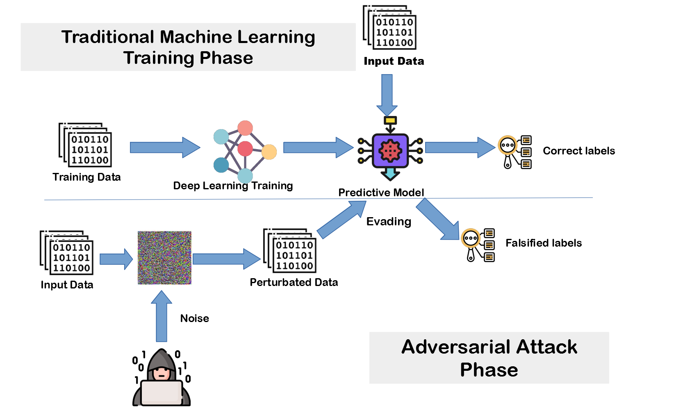
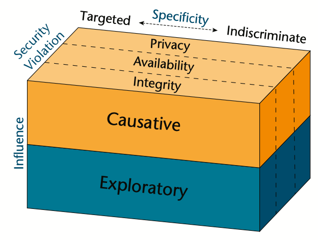

**Review** <div> <p1 class="text-4xl mb-8">A Survey of Game Theoretic Approaches for Adversarial Machine Learning in Cybersecurity Tasks</p1> </div> <div class="flex flex-col items-center justify-center bg-slate-300 h-20 w-full mt-8"> <p class="text-2xl">Krutartha Nagesh</p> </div> --- <!-- Author Introduction --> <div class="bg-slate-300 min-h-full w-full p-5"> <div class="mb-8">Authors</div> <ul class="p-5"> <li class="left-0 text-2xl p-5">Prithviraj Dasgupta <ul class="p-2"> <li class="mb-5">Union Pacific Endowed Professor in the Computer Science Department at the University of Nebraska, Omaha </li> <li class="mb-5">Multi Agent and Multi Robot Systems, Distributed AI, Machine Learning, and Game Theory</li> </ul> </li> <li class="left-0 text-2xl p-5">Joseph B. Collins <ul class="p-2"> <li class="mb-5">Senior Research Physicist, US Naval Research Laboratory, Washington, DC</li> <li class="mb-5">Adversarial Online Learning: Applications of game theory principles to machine learning in an adversarial environment</li> </ul> </li> </ul> </div> --- <!-- Background * Set the stage * Identify the problem * Story --> <div class="bg-slate-300 min-h-full w-full p-5"> <div class="mb-8">Background</div> <ul class="p-5"> <li class="left-0 text-2xl p-5">Adversarial Learning is a machine learning method that attacks the learner with deceptive input</li> </li> <li class="left-0 text-2xl p-5">Techniques used by machine-learning based predicition mechanisms such as a classifier to make itself robust against adversarial attacks</li> </ul> </div> -- <div class="flex flex-col items-center justify-center bg-slate-300 min-h-full w-full p-5"> <div class="mb-8">Background</div>  </div> -- <div class="flex flex-col items-center justify-center bg-slate-300 min-h-full w-full p-5"> <div class="mb-8">Background</div> <ul class="p-5"> <li class="left-0 text-2xl p-5">There are different types of Adversarial Attacks that lead to false classification <ul class="p-2"> <li class="mb-5">Influence based <ul class="p-2"> <li class="mb-5">Causative: Modify input data</li> <li class="">Exploratory: Observers classifier output for vulnerabilities</li> </ul> </li> <li class="mb-5">Specificity based</li> <li class="mb-5">Security Violation based</li> </ul> </li> </ul> </div> -- <div class="flex flex-col items-center justify-center bg-slate-300 min-h-full w-full p-5"> <div class="mb-8">Background</div>  </div> --- <div class="bg-slate-300 min-h-full w-full p-5"> <div class="mb-8">Problem Statement</div> <ul class="p-5"> <li class="left-0 text-2xl p-5">Adversarial attacks could render the learning algorithm unsuitable for use and leave critical systems vulnerable to cybersecurity attacks</li> <li class="left-0 text-2xl p-5">Examples: Email Spam Filtering, Antivirus Softwares, Image Classification in Defense and Medical Domains</li> </ul> </div> --- <div class="bg-slate-300 min-h-full w-full p-5"> <div class="mb-8">Author's Goals</div> <ul class="p-5"> <li class="left-0 text-2xl p-5">Examine current techniques used to make classifiers robust against Adversarial Attacks <ul class="p-2"> <li class="">Specifically, <mark class="">game theory</mark> based techniques</li> </ul> </li> <li class="left-0 text-2xl p-5">Highlight open problems and further research directions in this domain</li> </ul> </div> --- <div class="bg-slate-300 min-h-full w-full p-5"> <div class="mb-8">Assumptions</div> <ul class="p-5"> <li class="left-0 text-2xl p-5">The output of the learner’s prediction mechanism classifies the data into a finite set of classes</li> <li class="left-0 text-2xl p-5">In the classifier, each class is identified with a single output label</li> </ul> </div> --- <!-- Contributions --> <!-- Zero Sum Based --> <div class="bg-slate-300 min-h-full w-full p-5"> <div class="mb-8">Zero Sum Game based Techniques</div> <ul class="p-5"> <li class="left-0 text-2xl p-5">Nilesh Dalvi's "Classification Game" Model (2004) <ul class="p-2"> <li class="mb-5">Two player competitive game</li> <li class="mb-5">Learner is a binary classifier</li> <li class="mb-5">Adversary perturbs training data</li> <li class="mb-5">Asymmetric since adversary knows the learner’s utilities, parameters, and classification cost but the learner does not know if input data is perturbed</li> <li class="italic">Learner's utility = Reward - Classification Cost</li> <li class="italic mb-5">Adversary's utility = Reward - Perturbation Cost</li> <li class="mb-5">Learner and Adversary play a <mark>Nash Equilibrium</mark> strategy</li> <li>Validated on perturbed spam email data which led to low misclassification rates</li> </ul> </li> </div> -- <div class="bg-slate-300 min-h-full w-full p-5"> <div class="mb-8">Zero Sum Game based Techniques</div> <ul class="p-3"> <li class="left-0 text-2xl p-5">Lowd and Meek's ACRE Algorithm (2005) <ul class="p-2"> <li class="mb-3"><b>A</b>dversary <b>C</b>lassifier <b>R</b>everse <b>E</b>ngineering</li> <li class="mb-3">Relaxed the assumption that the adversary has complete information about the learner’s classification algorithm</li> <li class="mb-3">Adversary sends limited number of queries to obtain information(that is incomplete) abour learner</li> <li class="mb-3">Adversary computes lowest perturbation cost strategy to fool learner</li> <li class="mb-3"><mark>Not based on game theory</mark> but has become the basis of many game theory based techniques in the field</li> <li>Validated on spam Email data and found strategies withing 17% of lowest cost with just a few thousand queries</li> </ul> </li> </div> -- <div class="bg-slate-300 min-h-full w-full p-5"> <div class="mb-8">Zero Sum Game based Techniques</div> <ul class="p-5"> <li class="left-0 text-2xl p-5">Globerson and Rowies’s Selective Feature Removal (2006) <ul class="p-2"> <li class="mb-5">Adversary removes multiple or single features from input</li> <li class="mb-5">Learner’s determines optimal set of feature weights for classifier such that hinge loss is minimized</li> <li class="mb-5">Formulated as a <mark>minimax zero-sum game</mark></li> <li class="mb-5">Solved as a Constrained Optimization Problem</li> <li>Proved to be better than a Support Vector Machine(SVM) classifer for handwritten digits dataset(MNIST) and email spam filtering</li> </ul> </li> </div> --- <!-- Contributions --> <!-- Non Zero Sum Based --> <div class="bg-slate-300 min-h-full w-full p-5"> <div class="mb-8">Non Zero Sum Game based Techniques</div> <ul class="p-5"> <li class="left-0 text-2xl p-5">More realistic than zero sum since learner's loss might not always equal adversary's gain and vice versa</li> <li class="left-0 text-2xl p-5"><mark>Challenge:</mark> No way to know if the incorrectly classified data was actually perturbed</li> <li class="left-0 text-2xl p-5">Workaround <ul class="p-2"> <li class="mb-5">Learner incorporates the probability of the wrongly classified being perturbed into its loss utlitly function</li> <li class="mb-5">Adversary's loss depends on how successfully it fooled the classifier</li> </ul> </li> </div> -- <div class="bg-slate-300 min-h-full w-full p-5"> <div class="mb-8">Non Zero Sum Game based Techniques</div> <ul class="p-5"> <li class="left-0 text-2xl p-5">Bruckner and Scheffer's Bayesian Model (2011) <ul class="p-2"> <li class="mb-5">Utilities of learner and adversary form a probabilistic version of the normal form game, called the Bayesian Game</li> <li class="mb-5">Similar to ACRE, this model has become the basis for all other extensions of the Non Zero Sum Game techniques</li> </ul> </li> </div> -- <div class="bg-slate-300 min-h-full w-full p-5"> <div class="mb-8">Non Zero Sum Game based Techniques</div> <ul class="p-5"> <li class="left-0 text-2xl p-5">Mei and Zhu's Machine Teaching Model (2015) <ul class="p-2"> <li class="mb-5">Adversary assumes the role of a teacher</li> <li class="mb-5">Learner assumes the role of a student</li> <li class="mb-5">Adversary makes Causative Attacks to the Learner to coerce the learner to learn a concept</li> <li class="mb-5">Modelled as a bilevel optimization problem but relaxed to a linear optimization problem</li> </ul> </li> </div> -- <div class="bg-slate-300 min-h-full w-full p-5"> <div class="mb-8">Non Zero Sum Game based Techniques</div> <ul class="p-5"> <li class="left-0 text-2xl p-5">Dritsoula, Loiseau, and Musacchio's Classification Game (2017) <ul class="p-2"> <li class="mb-5">Incorporated the possibility of false alarms (classifier outputs non-mallicious data as mallicious)</li> <li class="mb-5">Learner maintains a probability of the adversary being mallicious vs non-mallicious, to reduce false alarms</li> <li class="italic mb-5">Learner's utility = Expected penatly for false alarm - Adversary's utility when it is mallicious</li> <li class="mb-5">Authors recognize a unique Nash Equilibrium for this non zero sum game</li> </ul> </li> </div> --- <div class="bg-slate-300 min-h-full w-full p-5"> <div class="mb-8">Authors' Credibility</div> <ul class="p-5"> <li class="left-0 text-2xl p-5">Evidences and Sample Size <ul class="p-2"> <li class="mb-5">Authors extensively use references throughout to establish credibility and support their claims</li> <li class="mb-5">Although the paper is a survey, the "sample size" is good, i.e. the authors consider a diverse set of techniques that use different frameworks and approaches</li> <li class="mb-5">Since I am not an expert, it is still unclear how varied the sample size is and if there is a scope for it to be more varied</li> </ul> </li> </ul> </div> --- <div class="bg-slate-300 min-h-full w-full p-5"> <div class="mb-8">Unique Contributions</div> <ul class="p-5"> <li class="left-0 text-2xl p-5">Authors recognize several open and valid problems in the domain <ul class="p-2"> <li class="mb-5">Most game theory based adversarial learning models assume that adversary has unlimited resource</li> <li class="mb-5">Game theory based models use learner and adversary utilities to choose stategies. Real life attackers use tactical strategies</li> <li class="mb-5">Most of the existing models are based on <mark>sequential</mark> games. Real life models are closer to <mark>simultaneous</mark> games</li> </ul> </li> </ul> </div> --- <div class="bg-slate-300 min-h-full w-full p-5"> <div class="mb-8">Future Work</div> <ul class="p-5"> <li class="left-0 text-2xl p-5">Transferring adversarial examples across models to ease making adversary models robust</li> <li class="left-0 text-2xl p-5">Using Transfer Learning on adversary models when training data is sparse</li> <li class="left-0 text-2xl p-5">One interesting example <ul class="p-2"> <li class="mb-5">IMDB Dataset(large) => Internet Client Classifier(sparse)</li> </ul> </li> </ul> </div> --- <!-- FIVE C's --> <div class="bg-slate-300 min-h-full w-full p-5"> <div class="mb-8">Summing up..</div> <ul class="p-5"> <li class="left-0 text-2xl p-5">Keshav's five C's <ul class="p-5"> <li class="left-0 text-2xl p-3"><b>Category</b>: A literature survey of existing techniques to solve a niche problem</li> <li class="left-0 text-2xl p-3"><b>Context</b>: Machine Learning, Adversarial Learning, Cybersecurity, Game Theory</li> <li class="left-0 text-2xl p-3"><b>Correctness</b>: Authors make reasonable assumptions and take credible approach to achieve goals</li> <li class="left-0 text-2xl p-3"><b>Contributions</b>: Valid and open problems are recognized and further research areas are discussed</li> <li class="left-0 text-2xl p-3"><b>Clarity</b>: Mostly well written but at times wordy and redundant</li> </ul> </li> </ul> </div> -- <div class="bg-slate-300 min-h-full w-full p-5"> <div class="mb-8">Summing up..</div> <ul class="p-5"> <li class="left-0 text-2xl p-5">Personal Opinions and Critique <ul class="p-3"> <li class="left-0 text-2xl p-3"><b>Pros</b> <ul> <li class="left-0 text-xl p-3">Well structured; topics and sections are divided to maintain a consitent and a smooth flow</li> <li class="left-0 text-xl p-3">Techniques are chronological ordered making it easy to notice gradual developments in the field</li> <li class="left-0 text-xl p-3">Figures and tables used are useful to understand the concepts</li> </ul> </li> </ul> </li> </ul> </div> -- <div class="bg-slate-300 min-h-full w-full p-5"> <div class="mb-8">Summing up..</div> <ul class="p-5"> <li class="left-0 text-2xl p-5">Personal Opinions and Critique <ul class="p-3"> <li class="left-0 text-2xl p-3"><b>Cons</b> <ul> <li class="left-0 text-xl p-3">Language is too wordy and redundant at times</li> <li class="left-0 text-xl p-3">Target audience not identified; Some terminologies are hard to grasp for a novice</li> <li class="left-0 text-xl p-3">Could use more examples to demonstrate concepts</li> </ul> </li> </ul> </li> </ul> </div>
Thank you
Thank you
Questions?